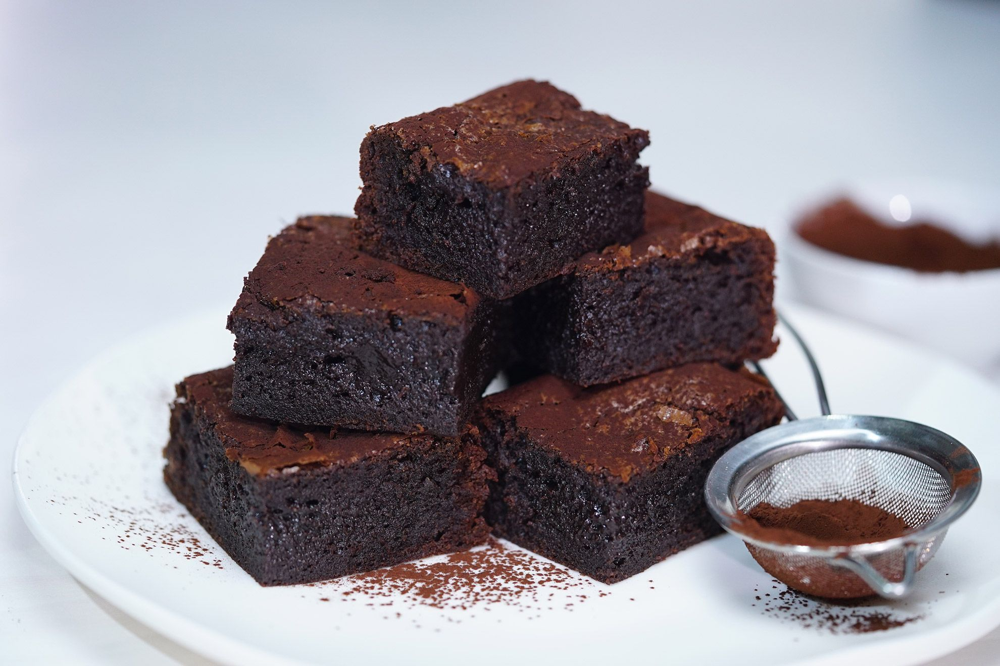

Chocolate Brownie Recipe

Description
These chocolate brownies are of the fudgy and chewy kind.
Originally created in the 1800s, the decadent US-born brownie
has united chocolate lovers around the world. Make these brownies
the day before to get them super chewy and indulgent with just the
right amount of squidginess in the centre.
Ingredients
- 125g Unsalted Butter
- 125g Baking Dark Chocolate (Chopped)
- 3 eggs (lightly whisked)
- 335g white sugar
- 115g plain flour
- 30g Dutch cocoa powder
- 1tsp vanilla extract
- Pinch of salt
Steps
- Preheat oven to 180/160C fan forced. Grease a 20cm square cake pan
and line with baking paper.
- Place butter and chocolate in a heatproof bown over a saucepan of simmering
water. Stir with a metal spoon until melted. Remove from heat.
- Quickly stir in egg, sugar, flour, cocoa powder, vanilla and salt until
just combined. Pour into prepared pan. Bake for 30 minutes or until a skewer
inserted in the centre comes out with moist crumbs clinging. Set aside to
cool completely.